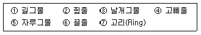
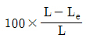
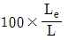
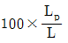
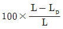
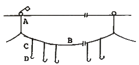

어로산업기사 (2013-06-02 기출문제)
1과목: 어구학
1. 어구에서 쓰는 밧줄의 강도는 실제로 그 밧줄에 걸리는 장력, 즉 허용 장력의 몇 배 정도가 가장 적합한가?
- 3~4배
- 4~6배
- 5~7배
- 6~8배
(정답률: 63%)

2. 권현망 어구에서 총 부력은 총 침강력의 몇 배가 되도록 해야 하는가?
- 2배
- 3배
- 4배
- 5배
(정답률: 76%)
3. 그물실의 꼬임이 많아지면 그물실의 직경은?
- 커진다.
- 작아진다.
- 변화없다.
- 커지기도 하고 작아지기도 한다.
(정답률: 87%)
4. 다음 그물감 중 자망 어구용으로 가장 적합한 것은?
- 참매듭 그물감
- 막매듭 그물감
- 관통 그물감
- 랏쉘 그물감
(정답률: 76%)
5. 다음 중 건착망의 구성 부분에 해당되는 것은?

- ②, ④, ⑤
- ②, ⑤, ⑦
- ②, ④, ⑦
- ④, ⑥, ⑦
(정답률: 79%)
6. 외두리 건착망에서 뜸을 배열하는 자강 적합한 방법은?
- 어포부에 더 많이 단다.
- 중앙부에 더 많이 단다.
- 균일하게 단다.
- 그물 끝부분에 더 많이 단다.
(정답률: 94%)
7. 평판형 전개판에서 전개력이 최대가 되는 흐름에 대한 각도는?
- 약 15도
- 약 25도
- 약 35도
- 약 45도
(정답률: 72%)
8. 그물어구 설계도면에서 각 사항의 기입 위치가 틀린 것은?
- 그물콧수는 그물감의 상하부에 기입
- 그물감의 길이, 콧수는 그물감의 좌`우측에 기입
- 그물실의 굵기는 그물감의 중앙에 기입
- 그물코의 크기는 그물실의 굵기 표시 좌`우측에 기입
(정답률: 75%)
9. 낚시에 걸린 고기가 빠져나가지 못하도록 하기 위한 낚시 바늘 부위는?
- point
- shank
- barb
- gap
(정답률: 80%)
10. 다음 규격 표시 방법 중 Tex를 표시하는 기준이 되는 것은?
- 9000m에 대한 g양
- 1000g에 대한 m양
- 840yards에 대한 g 양
- 1000m에 대한 g양
(정답률: 74%)
11. 끊어지는 순간의 그물실 길이를 L, 늘어났다 원상태로 돌아오는 그물실 길이를 Le, 늘어났다 원상태로 돌아오지 않는 길이를 Lp라고 하면 신장 회복율은?




(정답률: 79%)
12. 저층트롤, 기선저인망, 안강망용 그물감으로 주로 사용되는 섬유는?
- PE
- PA
- PES
- PP
(정답률: 82%)
13. 다음 중 선망 어구의 구성 요소가 아닌 것은?
- 죔줄
- 뜸줄
- 끝자루
- 고기받이
(정답률: 74%)
14. 랭그 꼬임 밧줄의 설명으로 틀린 것은?
- 마모가 적다.
- 유연도가 적다.
- 피로의 정도가 적다.
- 밧줄의 양끝을 고정해서 사용하는 정삭에 한하여 사용된다.
(정답률: 74%)
15. 수중에 들어가면 그물실의 파단 강도가 가장 크게 감소하는 것은?
- Nylon
- Tetron
- Saran
- Cramona
(정답률: 60%)
16. 번수(Nec)에 대한 설명 중 맞지 않은 것은?
- 영국식이라고도 한다.
- 무게를 기준으로 하기 때문에 항중법에 속한다.
- 1파운드 무게가 840야드일 때 1 Nec라 한다.
- 숫자가 커지면 커질수록 실을 굵기는 굵어진다.
(정답률: 88%)
17. 저인망에서 가장 필요하다고 생각되는 섬유의 성질은?
- 비중
- 유연성
- 내마찰성
- 투명성
(정답률: 87%)
18. 다음 중 같은 재료 및 굵기의 실로 제작하였을 때 항장력이 가장 큰 그물감은?
- 참매듭 그물감
- 막매듭 그물감
- 랏쉘 그물감
- 관통형 그물감
(정답률: 71%)
19. 다음 중 침강력과 가장 관계가 적은 젓은?
- 발돌
- 닻
- 멍
- 부표
(정답률: 89%)
20. 장등 그물(길그물)과 가장 관계가 깊은 어구는?
- 자망
- 건착망
- 안강망
- 정치망
(정답률: 88%)
2과목: 어업기기학
21. 어업기계의 동력으로 이용되는 직류 전동기를 바르게 분류한 것은?
- 직권, 이득, 분권
- 직권, 분권, 복권
- 사극, 분권, 복권
- 직권, 다극, 복권
(정답률: 92%)
22. 컬러 어군탐지기의 색깔은 무엇을 여러 가지 색으로 나누어 기록하는가?
- 탐지물의 색깔
- 수신음의 강도
- 탐지물의 크기
- 수신음의 주기
(정답률: 88%)
23. 선박의 선저에 설치되어 있는 송파기에서 발사된 초음파가 어군에 부딪쳐서 수파기에 되돌아오기까지 1.0초 걸렸다. 어군까지의 깊이는? (단, 흘수는 D(m)이다.)
- 750+D(m)
- 1500+D(m)
- 3000+D(m)
- 4500+D(m)
(정답률: 87%)
24. 다음 어로기계 중 건착망어업에 쓰이는 것이라고 볼 수 없는 것은?
- Turn Table
- 조임줄 원치
- Ball Winder
- 파워 블록
(정답률: 83%)
25. 프로펠러를 돌려 이에 연결된 소형발전기가 발생하는 기전력을 이용하는 어업 계측기는?
- Underwater tension meter
- Current mater
- Underwater thermometer
- Net height meter
(정답률: 86%)
26. 송수파기의 지향각 크기를 결정해주는 사항에 관한 설명으로 맞는 것은?
- 송ㆍ수파기 면적이 클수록 지향각은 커진다.
- 주파기가 높을수록 지향각은 작이진다.
- 송ㆍ수파기 계수가 클수록 작다.
- 면적이 같을 때는 주파수가 낮을수록 지향각은 작아진다.
(정답률: 70%)
27. 소나에서 초음파 빔(beam)을 수평으로 발사하기 사용되는 측수 장치로 수직 어군탐지기에서는 사용하지 않는 것은?(오류 신고가 접수된 문제입니다. 반드시 정답과 해설을 확인하시기 바랍니다.)
- 파워 블록
- 송ㆍ수파기 돔 장치
- 송ㆍ수파기 승강 장치
- 선체 진동 차단 장치
(정답률: 63%)
28. 다음 중 권동식 양`승망기에 속하는 어로기계는?
- 파워블록
- 집시드럼
- 조임줄 윈치
- 포경섬강 윈치
(정답률: 70%)
29. 다랑어 양승기의 본체에 부착되어 있는 풀리가 아닌 것은?
- 억압 풀리
- 사이드 풀리
- 인승 풀리
- 권승 풀리
(정답률: 58%)
30. 기선 저인망 어선에서 주로 사용하는 권양 장치는?
- 4각형 권동
- 3각형 권동
- 원추형 권동
- 원형 권동
(정답률: 83%)
31. 망심계(Net Sonde)의 설치에 관한 내용으로 적합하지 않은 것은?
- 발신기는 트롤망의 망구에 설치한다.
- 수파기는 선미에서 수중에 넣는다.
- 발신기 및 수파기는 동일 위치에 설치한다.
- 지시계는 어탐의 기록기와 같은 위치에 설치한다
(정답률: 52%)
32. 입력신호가 변동하는 경우, 그 계측계의 출력신호의 특성을 무엇이라 하는가?
- 분해특성
- 동특성
- 변동신호
- 가변신호
(정답률: 72%)
33. 항해시 어군탐지기의 잡음에 영향을 주는 요소와 가장 거리가 먼 것은?
- 기관의 진동
- 해저의 전선
- 수심이 낮은 천해의 항해
- 조타의 효율
(정답률: 92%)
34. 유압 펌프(pump)와 모터(motor)의 특징은?
- 작단의 속도를 무단속으로 자유로이 변속시킬 수 있다.
- 전기 장치에 비하여 소음이 많다.
- 고온에서는 기름이 고점성이 되므로 작동이 잘 되어 효율이 높다.
- 직선ㆍ회전 양 운동 중 어느 것이나 쉽게 얻을 수 없다.
(정답률: 77%)
35. 전동기를 기본속도 특성에 따라 분류할 때 해당되지 않는 것은?
- 정속 전동기
- 유도 전동기
- 변속 전동기
- 가변속 전동기
(정답률: 84%)
36. 발진 주파수를 시간과 더불어 변화시키고 송파기에서 발사되는 음파의 진동수도 같이 시간에 따라 변화시키는 어군탐지기는?
- 주파수 변이 어군탐지기
- 전자 수사 어군탐지기
- 수평 어군탐지기
- 방위 어군탐지기
(정답률: 87%)
37. 어군탐지기의 기록에서 일정 시간마다 기록되어 탐지물의 크기를 재는 척도가 되는 선은?
- 기준선
- 발진선
- 분시선
- 수신선
(정답률: 83%)
38. 걸그물 어업에서 어구를 감아들이는 방법으로 옳지 않은 것은?
- 뜸줄, 발줄, 그물감을 한데 뭉치는 줄을 두르고 그 줄을 권양기로 감아들인다.
- 뜸줄, 발줄, 그물감을 한데 뭉쳐 양망기로 전체를 끌어 올린다.
- 양승기로 발줄을 감아들이고 뜸줄과 그물감은 사람이 직접 끌어올린다.
- 발줄은 양승기로 감아올리고 뜸줄은 볼 롤러로 감아올린다.
(정답률: 80%)
39. 네트 레코더의 수파기의 장비와 역할에 관한 설명으로 옳지 않은 것은?
- 발신기의 초음파를 수신한다.
- 수파기는 어군탐지기의 기록지와 동일 위치에 설치한다.
- 해수 중에 투입하여야 한다.
- 발신기와 수신기가 서로 마주보게 설치한다.
(정답률: 69%)
40. 네트 레코더의 탐지부에서 얻을 수 있는 정보가 아닌 것은?
- 뜸줄과 발끌 사이의 간격
- 해면과 그물까지의 깊이
- 그물에 입망하는 어군의 크기
- 그물의 상하에 분포하는 어군의 군집 상태
(정답률: 80%)
3과목: 어장학
41. 수온이 어류에 자강 영향을 많이 주어 자원량에 변동을 주는 시기는?
- 산란기
- 생육기
- 회유기
- 색이기
(정답률: 84%)
42. 해양 표면의 음파 산란 손실을 산출 시 사용되는 것으로 가장 적합한 것은? (문제 오류로 정답이 정확하지 않습니다. 정답지를 찾지못하여 임의 정답 1번으로 설정하였습니다. 정답을 아시는 분께서는 오류 신고를 통하여 정답 입력 부탁 드립니다.)
- 소나 주파수
- 소나 주파수와 파고 사이의 관계
- 파장과 파고
- 파고의 주기적 변화
(정답률: 77%)
43. 엘리뇨 현상으로 인해 어획량이 가장 크게 감소한 페루지역의 어장 형태는? (문제 오류로 정답이 정확하지 않습니다. 정답지를 찾지못하여 임의 정답 1번으로 설정하였습니다. 정답을 아시는 분께서는 오류 신고를 통하여 정답 입력 부탁 드립니다.)
- 용승어장
- 와류어장
- 대륙붕어장
- 남극양어장
(정답률: 83%)
44. 수온약층에 관한 설명이 옳지 않은 것은?
- 수온의 연직온도 경도가 큰 층을 수온약층이라 한다.
- 영구약층은 주로 온대 및 열대 지방의 해역에서 나타난다.
- 계절약층이 나타나는 깊이는 한 대 해양에서 가장 깊이 나타난다.
- 계절약층이 태양 복사열이 표층에 집중되기 때문에 나타난다.
(정답률: 80%)
45. 다음 중 어업과 선박의 운항 등에 큰 영향을 미치는 조석 간만의 차가 최대인 시기는?
- 신월(초승달) 전후 1~2일
- 상현 전후 1~2일
- 하현 전후 1~2일
- 하루 중 달의 정중시
(정답률: 87%)
46. 다음 중 강수량과 어획량과의 관계가 가장 깊은 어종은?
- 오징어
- 문어
- 멸치
- 명태
(정답률: 84%)
47. 어류의 연직회유에 가장 큰 영향을 끼치는 것은?
- 조류
- 빛 강도
- 염분
- 수괴
(정답률: 82%)
48. 진행속도가 빠르고 뇌우나 돌풍이 예상되는 전선은?
- 온난 전선
- 한랭 전선
- 폐색 전선
- 전체 전선
(정답률: 89%)
49. 조경어장과 관계가 먼 것은?
- 수괴의 경계선은 전선을 이룬다.
- 경계선 부근에 해수의 와동이 생긴다.
- 기온과 바람의 영향을 많이 받는다.
- 경계선 부근에 어장이 형성된다.
(정답률: 82%)
50. 해수의 밀도에 대한 설명 중 맞는 것은?
- 해수의 밀도는 수온과 비례한다.
- 해수의 밀도와 안정도와는 관계가 없다.
- 순수한 물의 최대 밀도는 1기압, 0℃일 때 나타난다.
- 해수의 밀도는 단위 부피당 질량으로 정의된 값이다.
(정답률: 60%)
51. 한류 및 난류에 관한 내용 중 옳은 것은?
- 난류란 수온이 15℃이상인 해류를 말한다.
- 한류란 수온이 10℃이상인 해류를 말한다.
- 난류는 염분이 높고 영양염이 풍부하여 생물이 번성한다.
- 한류는 저염분이며 생산력이 높고 투명도가 낮다.
(정답률: 63%)
52. 해양에서 영양염의 분포에 대한 설명 중 옳은 것은? (문제 오류로 정답이 정확하지 않습니다. 정답지를 찾지못하여 임의 정답 1번으로 설정하였습니다. 정답을 아시는 분께서는 오류 신고를 통하여 정답 입력 부탁 드립니다.)
- 인산염은 대개 난류에 많다.
- 규산염은 표층에 많고 심층에 적다.
- 실소 화합물은 한대 해양에 많다.
- 인산염과 질소 화합물 등은 대개 하절기에 많다.
(정답률: 67%)
53. 온난전선의 특징에 관한 내용으로 옳지 않은 것은?
- 전선면의 경사는 1/100~1/20로 완만하다.
- 전선의 범위가 넓고 지속성 강우를 동반한다.
- 소나기 뇌우, 돌풍 등의 사나운 날씨를 보인다.
- 전선통과 후 기온이 상승한다.
(정답률: 84%)
54. 대륙붕상의 생산력이 높은 어장과 그 어장의 주 어획물로 바르게 짝지어진 것은?
- 북해어장-명태, 새우
- 뉴펀들랜드 어장-멸치, 문어
- 북태평양 어장- 명태, 대구
- 남극양 어장-다랑어, 게
(정답률: 81%)
55. 다음 어장 환경요인 중 생물의 성장과 번식의 제한 요인으로 가장 크게 작용하는 것은?
- 인산염
- 저질
- 규산염
- 탄산가스
(정답률: 88%)
56. 표면보다 깊은 곳의 수온측정에 쓰이지 않는 것은?
- 전도온도계
- CTD
- 복사온도계
- XBT
(정답률: 79%)
57. 성어기를 바다에서 보내고 산란을 위해 모천을 찾아 상류로 올라가는 어류에 속하는 것은?
- 뱀장어
- 연어
- 잉어
- 다랑어
(정답률: 81%)
58. 다음 중 쿠로시오와 오야시오 사이에 이루어지는 전선역에서 잡히는 어류가 아닌 것은?(오류 신고가 접수된 문제입니다. 반드시 정답과 해설을 확인하시기 바랍니다.)
- 꽁치
- 황다랑어
- 날개 다랑어
- 고등어
(정답률: 40%)
59. 일반적으로 항구의 조석주기는 평균 얼마인가?
- 6시간 25분
- 12시간 25분
- 24시간 25분
- 18시간 25분
(정답률: 95%)
60. 우리나라에서 어황 예보를 하는 곳은?
- 국토교통부 수로국
- 국립수산과학원
- 해양수산부 어업과
- 기상청 기상연구소
(정답률: 86%)
4과목: 어법학
61. 대형낙망에서 등망(비탈그물)의 구조 설계 시 특히 요구되는 것은?
- 정상적인 전개와는 관계없이 필히 조류의 방향과 일치될 것
- 조류의 방행과는 다소 불일치하여도 정상적인 전개가 될 것
- 아랫자락은 다소 아래로 볼록하게 할 것
- 아랫자락은 거의 직선적으로 할 것
(정답률: 83%)
62. 연안 안강망 어법의 대상 어종이 아닌 것은?
- 참조기
- 부세
- 갈치
- 연어
(정답률: 84%)
63. Otter trawl 과 관계없는 것은?
- 전개판
- 갯대
- 톱롤러
- 갤로스
(정답률: 72%)
64. 우리나라 연근해에서 조업하고 있는 주요 자망어업의 어구 중 잉여부력이 가장 큰 것은?
- 멸치 유자망
- 명태 고정자망
- 조기 유자망
- 꽁치 유자망
(정답률: 50%)
65. 건착망의 양망 작업에서 죔줄을 감아올리는 장치는?
- 원치
- 양망기
- 파워블록
- 파워로울러
(정답률: 78%)
66. 다랑어 어종 중 서식수온이 가장 높고, 분포 해역이 가장 저위도에 있는 어종은?
- 참다랑어
- 눈다랑어
- 황다랑어
- 날개다랑어
(정답률: 82%)
67. 건착망의 조업순서가 맞는 것은?
- 투망-양망-조임줄 조이기-어획물 퍼올리기
- 투망-조임줄 조이기- 양망-어획물 퍼올리기
- 조임줄 조이기-투망-어획물 퍼올리기- 양망
- 투망-어획물 퍼올리기-양망-조임줄 조이기
(정답률: 91%)
68. 정치망 어구의 기술적 개량으로 2중낙망과 2단식 원동을 하는 이유로 가장 적합한 것은?
- 섬유가 갖는 결점을 보강하기 위해서
- 감시장치로 어군의 입망을 관찰하기 위해서
- 원동의 날림방지를 위해서
- 입망한 고기의 출망을 방지하기 위해서
(정답률: 93%)
69. 정치망 중 대형 낙망의 특징에 관한 설명으로 옳지 않은 것은? (문제 오류로 정답이 정확하지 않습니다. 정답지를 찾지못하여 임의 정답 1번으로 설정하였습니다. 정답을 아시는 분께서는 오류 신고를 통하여 정답 입력 부탁 드립니다.)
- 전형적인 낙망이고 헛통에는 까래, 병풍 및 천장그물이 있다.
- 헛통과 원동사이에는 등망이 있다.
- 양망은 등망과 원통의 연결부부터 시작한다.
- 수심이 비교적 깊은 곳에 설치하여 방어, 삼치, 연어 등 대형어를 주 대상으로 한다.
(정답률: 66%)
70. 권형망 어법에서 자루그물에 들어간 어군을 되돌아 나와서 도피하는 것을 막기 위한 부분은?(오류 신고가 접수된 문제입니다. 반드시 정답과 해설을 확인하시기 바랍니다.)
- 섶
- 앞창
- 나팔
- 문턱
(정답률: 53%)
71. 현측식 트롤선의 조업방법 중 틀린 것은?
- 투·양망현에서 풍랑을 받으며 조업
- 양망은 좌현
- 투망은 우현
- 예망은 선미 1점에 지지하여 실시
(정답률: 73%)
72. 강한 조류에 의해 망형을 유지하며, 어류를 조류에 의해 강제함입시켜 어획을 달성하는 정치성 어구류는?
- 대모망
- 낙망
- 낭장망
- 승망
(정답률: 69%)
73. 현측식 트롤과 비교한 선미식 트롤의 특징 설명으로 틀린 것은?
- 계획 예망선상을 항주하면서 투망`예망할 수 있다.
- 저격적 어법을 쓸 수가 있다.
- 전개판의 전개간격이 좁다.
- 투·양망 시간이 훨씬 단축된다.
(정답률: 85%)
74. 선망 어업으로 어획하기 적합한 어군이라 할 수 없는 것은?
- 다랑어
- 명태
- 고등어
- 정어리
(정답률: 85%)
75. 꽁치 유자망의 조업에 관한 내용 중 틀린 것은?(오류 신고가 접수된 문제입니다. 반드시 정답과 해설을 확인하시기 바랍니다.)
- 어군의 탐색은 수색, 조경, 경험 등이 지표가 된다.
- 어군의 진행방향에 수직으로 투망하는 것이 원칙이다.
- 흐름의 아래쪽에서 위쪽으로 흐름에 나란히 투망함이 원칙이다.
- 밝은 동안에 투망할 경우 직선형보타 만곡형이 능률적이다.
(정답률: 66%)
76. 만곡형 전개판의 최대 유효 진행각도는?
- 20도
- 25도
- 30도
- 35도
(정답률: 62%)
77. 그림은 주낙어구의 모식도이다. 모릿줄이한 어느 부분을 말하는가?

- A
- B
- C
- D
(정답률: 88%)
78. 권형망의 설명으로 틀린 것은?
- 날개는 크게 오비기와 수비기로 나뉜다.
- 투망시 끌배는 자루를 투입하고 약 60도 각도로 전개
- 그물배의 선미에는 U형 홈이 있는 양망기가 설치되어 있다.
- 어선은 어탐선 1척, 그물배 1척, 가공 운반선 1척으로 구성된다.
(정답률: 73%)
79. 같은 어선으로서 조업하는 경우 2통 끌이 새우 트롤이 1통 끌이에 비해 유리한 점은?
- 소해 면적이 크다.
- 망고가 높아진다.
- 깊은 곳에서 조업이 가능하다.
- 인력이 적게 든다.
(정답률: 90%)
80. 권형망 어구에서 어군이 아래쪽으로 도피하는 것을 방지하기 위하여 있는 것은?
- 문턱
- 앞창
- 호장
- 고깔
(정답률: 87%)
이에 따라, 밧줄의 강도는 보통 그 밧줄에 걸리는 장력의 5~7배 정도가 적합합니다. 이 범위를 벗어나면 밧줄이 너무 약하거나 강하게 되어 안전성이 떨어질 수 있습니다. 따라서 이 보기에서 정답은 "5~7배"입니다.